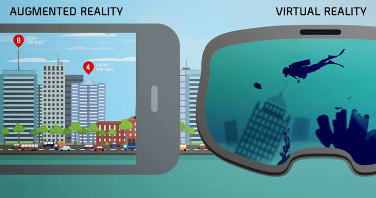

¿Qué son la VR y la AR?
La Realidad Virtual (VR) sumerge completamente al usuario en un entorno simulado por computadora, aislándolo del mundo físico mediante visores especiales.
Por otro lado, la Realidad Aumentada (AR) superpone elementos gráficos, datos o modelos digitales en 3D sobre la visión del mundo real a través de dispositivos como teléfonos o gafas inteligentes.
Ambas tecnologías transforman la manera en que interactuamos con la información en campos educativos, industriales y de entrenamiento técnico.
Campos de Aplicación
- Educación: Simulaciones interactivas e históricas.
- Salud: Entrenamiento médico y cirugías guiadas.
- Industria: Diseños, maquetas y prototipado rápido.
Diferencias entre VR y AR
| Aspecto | Realidad Virtual (VR) | Realidad Aumentada (AR) |
|---|---|---|
| Experiencia | Entorno 100% digital e inmersivo | Elementos digitales superpuestos en el mundo real |
| Dispositivos | Meta Quest, HTC Vive | Microsoft HoloLens, Smartphones |
| Uso Principal | Videojuegos y simulaciones cerradas | Navegación, medicina e industria |
